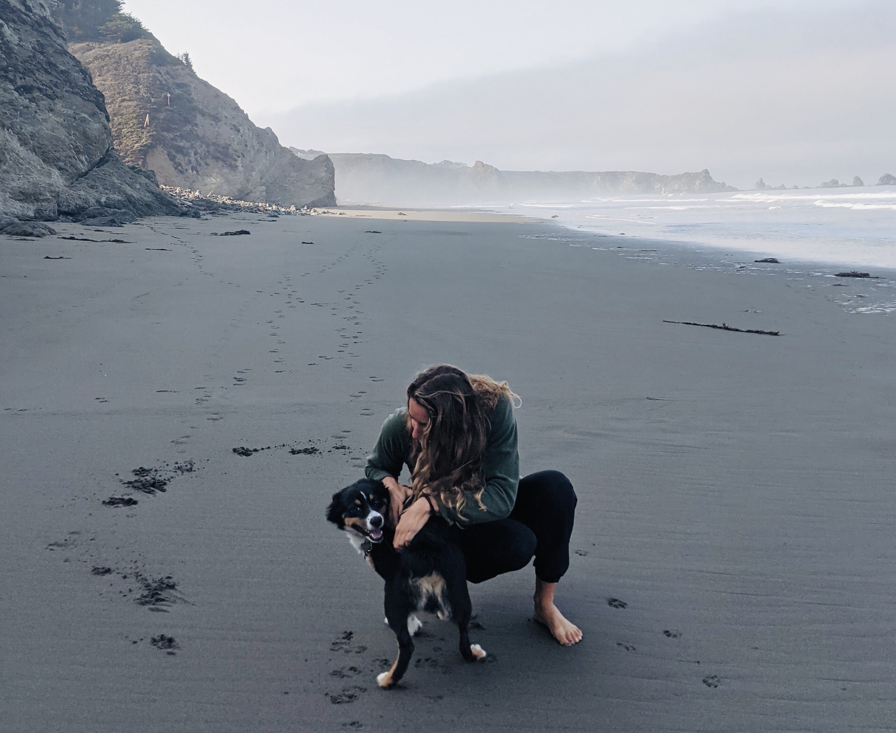

about
thanks for taking the time to learn about me.
water person
I am an aquatic physiologist working as an academic (postdoctoral scholar) on the islands of Oahu and Vancouver Island. I am also a settler living and working on the unceded, ancestral, and traditional ’āina of Hawai’i. I trace my family’s roots to western Europe but recognize that I reside on a territory recognized by Indigenous Hawaiians as their ancestral grandmother, Papahānaumoku, that has been treated with care by generations of Indigenous Hawaiians. I am grateful to be on this ’āina and seek to support her and its communities with patience and collaboration.
fresh air
Hard work can be draining, so I value the time I can get outdoors. I am privileged to live by the ocean and travel to other beautiful places for work. I try to make the most of this by finding quiet time to myself, whether it be on a surfboard or on a walk with my pup. When I can’t hear the birds, that’s when I know it’s time to hike somewhere and sleep outside for a few days.

intro to science
Like most people, my path to present day is nonlinear. It started off with a childhood in the woods and backyard, a yearning for sunshine and warmth, and a few dedicated teachers at Santa Barbara City College. During my CC days, I had my first research experience at UC Santa Barbara studying raccoon parasites with at the time, graduate student Sara Weinstein. I loved the process of science and wanted more, and was awarded an NSF REU at the Marine Biological Laboratory in Woods Hole. I worked with Dr. Allen Mensinger on toadfish bioacoustics. At the time, I had no idea fish vocalized! I spent several additional summmers studying toadfish neurophysiology and was hooked to physiology.
I wanted to merge my scientific background with my desire to learn and conserve vulnerable systems. That brings me to today as I finish my PhD at UC Santa Barbara with Dr. Erika Eliason.